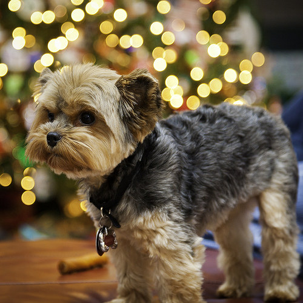

Dogs are the best.

Life got you down? Read about some dogs!
Yorkie

A yorkshire terrier. Small, feisty, and stubborn.
Golden Doodle
A golden doodle, a mix between a golden retriever and a poodle.
Another Yorkie
You can't have enough yorkies. They love to lay in the grass.